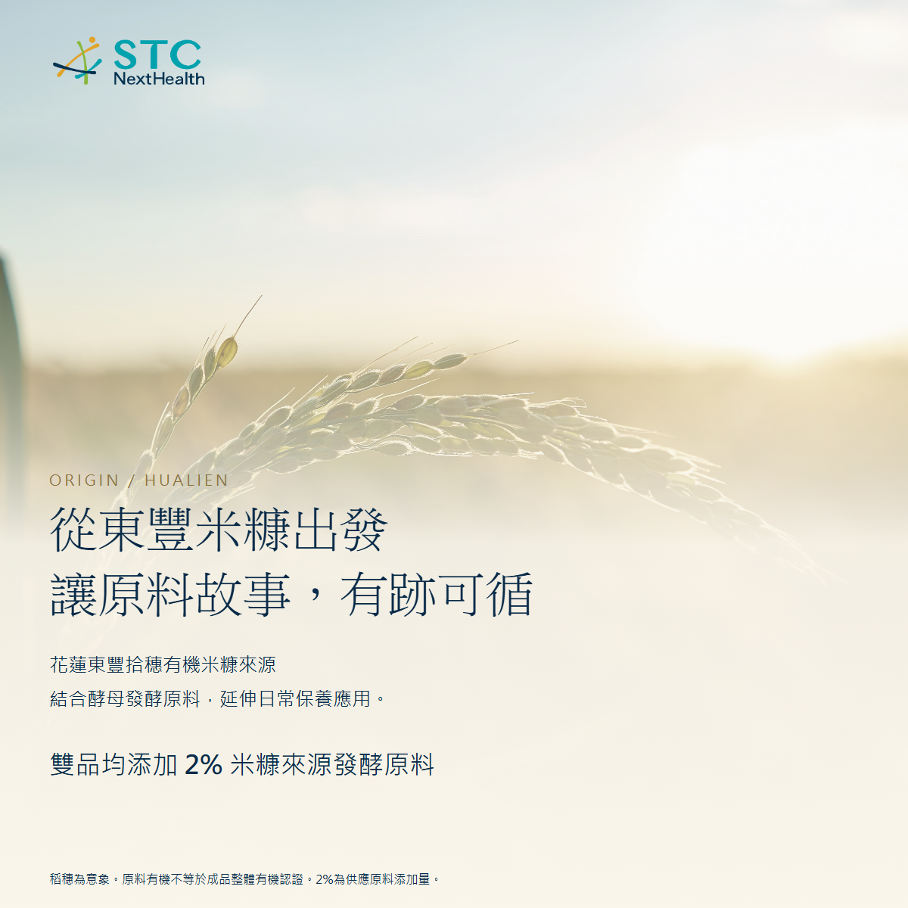
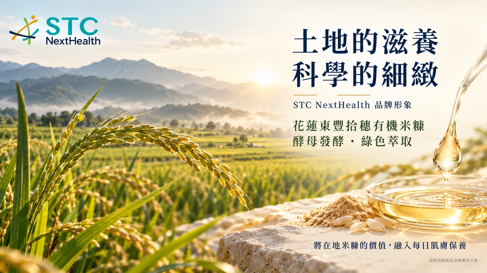
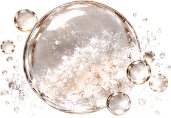
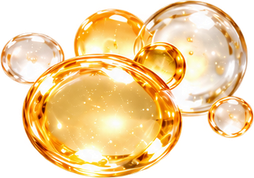
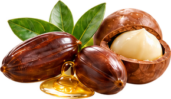
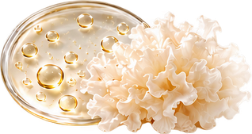
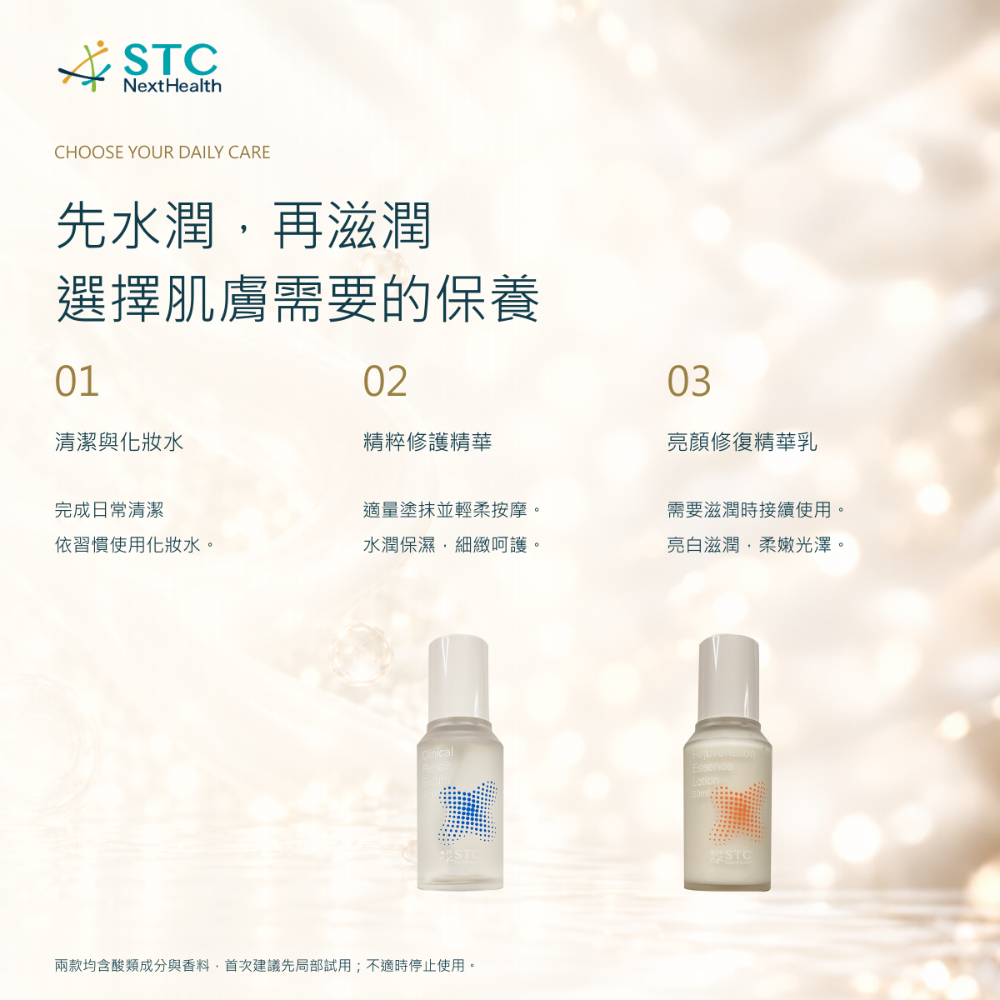

2% 米糠來源發酵原料
Saccharomyces Ferment Lysate Filtrate
以花蓮東豐米糠來源發酵原料，連結在地原料故事與每日保養。2%為供應原料添加量。


LOCAL ORIGIN / DAILY CARE
從東豐拾穗有機米糠來源發酵原料出發，STC NextHealth 將在地故事與配方搭配結合。先了解原料，再依肌膚需要選擇水潤或滋潤保養。
兩款米糠來源發酵原料添加量
亮顏精華乳傳明酸含量
各款容量｜台灣製造
發酵原料添加量依品牌2026/10/22補充資訊；不是純米糠或活性物濃度。
CHOOSE YOUR CARE

THE ORIGIN STORY
將米糠的應用延伸到日常保養，讓原料來源成為可以了解的品牌細節。米糠來源發酵原料結合不同配方，分別呈現精華的水潤照顧與精華乳的滋潤搭配。
圖為既有品牌概念意象。原料有機來源不等於成品整體有機認證；來源資料須與供應批次一致。
INGREDIENTS / FORMULA
精華以水潤保濕為主，精華乳結合亮白與滋潤搭配。每組成分皆以獨立圖片輔助說明。
FORMULA EXPLAINED
Saccharomyces Ferment Lysate Filtrate
以花蓮東豐米糠來源發酵原料，連結在地原料故事與每日保養。2%為供應原料添加量。

Tremella Extract + Glycerin
搭配保濕成分，協助肌膚保水，維持水潤柔嫩的膚觸。

Allantoin
舒緩乾燥造成的不適，維持肌膚柔嫩與舒適。
Azelaic Acid
配方中的肌膚調理成分；含酸類成分，請依個人膚況使用。
成分圖片為保養概念示意，非成品微觀結構或人體實測。發酵原料2%指供應原料添加量，不等於純米糠或活性物濃度。完整INCI見商品規格。
FORMULA EXPLAINED

Tranexamic Acid
亮白保養搭配，展現肌膚自然光澤；以日常保養方式持續使用。

Niacinamide / Ascorbic Acid / Vitamin E
結合維他命成分搭配，融入肌膚調理，維持細緻柔嫩與自然光澤。

Jojoba Seed Oil + Macadamia Seed Oil
植物油脂搭配潤膚配方，滋潤肌膚，維持柔嫩細緻膚觸。

Saccharomyces Ferment + Tremella Extract
米糠來源發酵原料結合銀耳萃取，將原料特色融入水潤保養。
成分圖片為保養概念示意，非成品微觀結構或人體實測。發酵原料2%指供應原料添加量，不等於純米糠或活性物濃度。完整INCI見商品規格。
清潔與化妝水後，可先使用精華；需要滋潤時，再搭配精華乳。兩款均含酸類成分與香料，首次使用前先局部試用。

STC NANOTECH / EVERYDAY TEXTILE CARE
CHANNEL ASSET DOWNLOADS
依 Word 定價：精粹修護精華 NT$1,680；亮顏修復精華乳 NT$1,880。皆為50 mL，以新台幣販售。
2048方形商品照、2000×800桌機橫幅、1200×1500手機圖，附商品說明與欄位資料。
下載 Shopify 素材每款九張1200×1200方圖，含定價、四組成分、全成分、用法及規格。
下載蝦皮素材現有官網公開幣別為USD；上架時將台灣市場設為TWD並對應定價。CSV僅供TWD基準幣別商店使用，詳細說明隨包附上。
三張2000 × 800 px橫幅，四張1200 × 1200 px方圖。兩款瓶器與紙盒另附透明背景修飾稿；成分圖維持四組獨立素材。